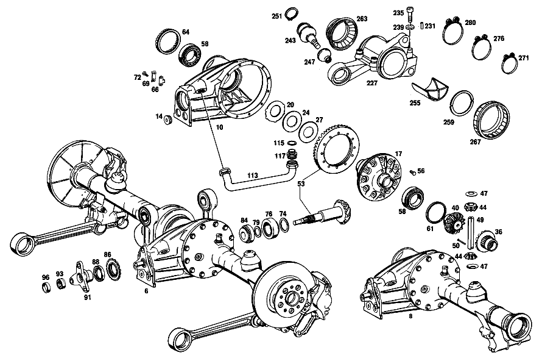

| № | Артикул | Название | Кол. | Примечание | Ограничение |
|---|---|---|---|---|---|
| 6 | A 100 350 10 00 | ЗАДНИЙ МОСТ | 1 | ПЕРЕДАТОЧНОЕ ОТНОШЕНИЕ: 1:3.23 [697] ДЕТАЛЬ ПОСТАВЛЯЕТСЯ ТОЛЬКО/ИЛИ ТАКЖЕ КАК ЗАП.ЧАСТЬ | |
| 8 | A 100 350 01 03 | КАРТЕР МОСТА | 1 | [417] БОЛЬШЕ НЕ ПОСТАВЛЯЕТСЯ, ЗАКАЗЫВАТЬ КОМПЛЕКТ ПОСТАВКИ | |
| 10 | A 100 351 11 01 | БАЛКА МОСТА | 1 | [003] FROM CHASSIS 002306 EXCEPT FOR 002313-002319 | |
| 14 | N 000906 036000 | Резьбовая пробка | 2 | ||
| 17 | A 100 350 16 23 | ДИФФЕРЕНЦИАЛ | 1 | БЕЗ КОМПЛЕКТА ШЕСТЕРЕН | |
| 20 | A 100 353 19 62 | - ШАЙБА УПОРНАЯ | 12 | ПО НЕОБХОДИМОСТИ 1.3 MM | |
| 24 | A 100 353 46 62 | - ШАЙБА УПОРНАЯ | 10 | ПО НЕОБХОДИМОСТИ 2.5mm | |
| 27 | A 100 353 48 62 | - ШАЙБА УПОРНАЯ | 2 | ПО НЕОБХОДИМОСТИ 3.3 MM | |
| 36 | A 100 353 16 15 | - ШЕСТЕРНЯ ПОЛУОСИ | 1 | СЛЕВА | |
| 40 | A 100 350 11 40 | - ВЕДУЩ.КОН.ШЕСТЕРНЯ | 1 | СПРАВА | |
| 44 | A 100 353 08 14 | - Сателлит дифференциала | 2 | ||
| 47 | A 100 353 08 24 | - СФЕРИЧЕСКАЯ ШАЙБА | 2 | ||
| 49 | A 100 353 04 21 | - БОЛТ | 1 | ||
| 50 | A 100 353 01 74 | - БОЛТ | 1 | ||
| 53 | A 100 350 06 39 | РЯД ШЕСТЕРЕН | 1 | ПЕРЕДАТОЧНОЕ ОТНОШЕНИЕ: 1:3.23 [402] БОЛЬШЕ НЕ ПОСТАВЛЯЕТСЯ | |
| 56 | A 100 990 28 01 | БОЛТ | 12 | ||
| 56 | A 100 990 28 01 | БОЛТ | 10 | ||
| 58 | A 000 980 07 02 | Конический подшипник | 2 | ||
| 61 | A 100 353 22 52 | РАСПОРНАЯ ШАЙБА | 1 | ПО НЕОБХОДИМОСТИ 1.8mm | |
| 64 | A 100 353 01 25 | КОЛЬЦО РЕЗЬБОВОЕ | 1 | ||
| 66 | A 180 353 01 73 | ПРЕДОХРАНИТЕЛЬ | 1 | ПО НЕОБХОДИМОСТИ | |
| 69 | A 180 994 00 30 | Стопорная шайба | 1 | ||
| 72 | N 000933 006122 | Винт | - | ||
| 72 | N 304017 006034 | Винт с 6-гранной головкой | 1 | ||
| 74 | A 100 353 02 52 | РАСПОРНАЯ ШАЙБА | 1 | ПО НЕОБХОДИМОСТИ 0.90 MM | |
| 76 | A 000 980 09 02 | Конический подшипник | 1 | ||
| 79 | A 100 353 01 51 | ДИСТАНЦИОННОЕ КОЛЬЦО | 1 | ПО НЕОБХОДИМОСТИ 3.1 MM | |
| 84 | A 000 980 08 02 | КОНИЧ. РОЛИКОПОДШИПНИК | 1 | ||
| 86 | A 100 350 00 43 | КОЛЬЦО РЕГУЛИРОВОЧНОЕ | 1 | ||
| 88 | A 004 997 54 46 | - УПЛОТНИТ. КОЛЬЦО | 1 | ||
| 91 | A 100 350 06 45 | ФЛАНЕЦ | 1 | ||
| 93 | A 100 350 02 66 | ГАЙКА ШЛИЦЕВАЯ | 1 | ||
| 96 | A 100 994 01 44 | - ПРЕДОХРАНИТЕЛЬ | 1 | ||
| 99 | A 100 350 25 19 | ТРУБА НЕСУЩАЯ | 1 | СЛЕВА [003] FROM CHASSIS 002306 EXCEPT FOR 002313-002319 | |
| 103 | A 100 350 17 19 | ТРУБА НЕСУЩАЯ | 1 | СПРАВА | |
| 106 | A 115 350 02 90 | Воздушный клапан | 1 | ||
| 108 | A 100 357 05 85 | САЙЛЕНТ-БЛОК | 2 | ||
| 110 | A 186 997 00 32 | ЗАГЛУШКА РЕЗЬБОВАЯ | 1 | M24X1,5 | |
| 113 | A 100 350 04 80 | ПРОВОД | 1 | [003] FROM CHASSIS 002306 EXCEPT FOR 002313-002319 | |
| 115 | N 007603 030109 | Уплотнительное кольцо | 2 | [003] FROM CHASSIS 002306 EXCEPT FOR 002313-002319 | |
| 117 | N 915013 025000 | Штуцер | 2 | [003] FROM CHASSIS 002306 EXCEPT FOR 002313-002319 | |
| 120 | N 000933 010105 | Винт | - | ||
| 120 | N 304017 010019 | Винт с 6-гранной головкой | 12 | M10X25 | |
| 122 | N 900087 010000 | Пробка | 1 | [402] БОЛЬШЕ НЕ ПОСТАВЛЯЕТСЯ | |
| 125 | A 100 350 04 13 | ШАРНИР ШАРОВОЙ | 1 | ||
| 127 | A 100 350 06 13 | - ШАРНИР ШАРОВОЙ | 1 | ||
| 129 | A 000 994 90 41 | - ПРЕДОХРАНИТЕЛЬ | 2 | ||
| 132 | A 180 981 00 86 | - Ролик | 132 | ||
| 134 | A 100 357 00 52 | - РАСПОРНАЯ ШАЙБА | 1 | ||
| 136 | N 000472 055000 | - Стопорное кольцо | 1 | 55X2 | |
| 138 | A 100 357 02 50 | ВТУЛКА | 1 | ||
| 141 | A 100 357 02 52 | РАСПОРНАЯ ШАЙБА | 1 | ПО НЕОБХОДИМОСТИ 0.5mm | |
| 145 | N 000931 010234 | Винт | 1 | ||
| 147 | N 912004 010102 | Пружинное кольцо | 1 | ||
| 149 | A 100 357 07 91 | МАНЖЕТА | 1 | ||
| 153 | A 100 357 09 01 | ВАЛ ЗАДНЕГО МОСТА | 1 | СЛЕВА | |
| 155 | A 100 357 11 01 | ВАЛ ЗАДНЕГО МОСТА | 1 | СПРАВА | |
| 157 | A 100 357 00 74 | БОЛТ | 1 | ||
| 160 | A 180 993 31 01 | ПРУЖИНА | 1 | ||
| 162 | N 006799 003202 | Стопорная шайба | 1 | ||
| 164 | N 000635 022210 | Роликовый подшипник | 2 | ||
| 166 | A 100 357 00 73 | ПРЕДОХРАНИТЕЛЬ | 2 | ||
| 168 | A 100 357 00 26 | ГАЙКА ШЛИЦЕВАЯ | 2 | ||
| 170 | A 002 997 96 46 | УПЛОТНИТ. КОЛЬЦО | 2 | ВНУТР. | |
| 172 | A 100 423 01 79 | ПРОКЛАДКА УПЛОТНИТЕЛЬНАЯ | 2 | ||
| 174 | A 100 420 10 86 | ДЕРЖАТЕЛЬ | 2 | [402] БОЛЬШЕ НЕ ПОСТАВЛЯЕТСЯ | |
| 176 | A 002 997 95 46 | УПЛОТНИТ. КОЛЬЦО | 2 | СНАРУЖИ | |
| 179 | N 000933 008147 | Винт | - | ||
| 179 | N 304017 008021 | Винт с 6-гранной головкой | 12 | M8X20 | |
| 181 | N 912004 008102 | Пружинное кольцо | 12 | ||
| 183 | A 100 423 05 12 | ТОРМОЗНОЙ ДИСК | 2 | ||
| 186 | A 100 357 02 08 | ФЛАНЕЦ | 2 | ||
| 188 | N 000912 014008 | Винт | 10 | ||
| 190 | N 007980 014002 | Пружинное кольцо | 10 | ||
| 193 | A 100 350 01 55 | БОЛТ | 1 | ||
| 195 | A 188 351 00 86 | КОЛЬЦО РЕЗИНОВОЕ | 2 | ||
| 198 | A 188 990 00 35 | БОЛТ | 1 | ||
| 200 | N 912004 008102 | Пружинное кольцо | 1 | ||
| 203 | N 000934 008010 | Гайка | - | ||
| 203 | N 304032 008006 | Шестигранная гайка | 1 | M8 | |
| 206 | A 100 351 01 53 | РАСПОРН. ТРУБКА | 2 | ||
| 208 | A 100 350 15 32 | КРОНШТЕЙН | 2 | ||
| 210 | A 100 351 02 42 | - САЙЛЕНТ-БЛОК | 4 | ||
| 213 | A 100 351 02 48 | - САЙЛЕНТ-БЛОК | 2 | ||
| 215 | A 188 351 01 51 | ДИСТАНЦИОННОЕ КОЛЬЦО | 2 | ||
| 218 | A 188 351 03 53 | РАСПОРН. ТРУБКА | 1 | ||
| 221 | A 188 351 00 73 | ПРЕДОХРАНИТЕЛЬ | 1 | ||
| 223 | N 070852 035000 | Гайка | 1 | ||
| 227 | A 100 350 14 42 | КОРПУС ПОДШИПНИКА | 1 | СЛЕВА | |
| 231 | N 000007 006206 | - Цилиндрический штифт | 1 | [402] БОЛЬШЕ НЕ ПОСТАВЛЯЕТСЯ | |
| 235 | N 000912 010051 | - Винт | 8 | ||
| 239 | N 000137 010201 | - Пружинная шайба | 8 | ||
| 243 | A 000 352 00 29 | ШАРНИР ШАРОВОЙ | 2 | ||
| 247 | A 000 338 05 97 | - МАНЖЕТА | - | ||
| 247 | A 100 586 00 33 | - РЕМКОМПЛЕКТ | 2 | ||
| 251 | A 094 990 63 05 | - Стопорное кольцо | 2 | ||
| 255 | A 100 358 14 22 | ВКЛАДЫШ ПОДШИПНИКА | 4 | ||
| 259 | A 112 357 04 62 | ШАЙБА УПОРНАЯ | 8 | ПО НЕОБХОДИМОСТИ 2.9 MM | |
| 263 | A 100 357 02 91 | МАНЖЕТА | 2 | ||
| 267 | A 100 357 04 91 | МАНЖЕТА | 2 | ||
| 271 | A 000 997 73 90 | СОЕДИНИТЕЛЬНЫЙ ЭЛЕМЕНТ | 2 | 69 MM | |
| 276 | A 000 997 74 90 | СОЕДИНИТЕЛЬНЫЙ ЭЛЕМЕНТ | 4 | 88 MM | |
| 280 | A 000 997 75 90 | СОЕДИНИТЕЛЬНЫЙ ЭЛЕМЕНТ | 2 | 105 MM | |
| 283 | A 100 350 04 06 | Продольный рычаг | 1 | СЛЕВА | |
| 287 | A 000 352 00 29 | - ШАРНИР ШАРОВОЙ | 2 | ||
| 291 | A 000 338 05 97 | - МАНЖЕТА | - | ||
| 291 | A 100 586 00 33 | - РЕМКОМПЛЕКТ | 2 | ||
| 295 | A 094 990 63 05 | - Стопорное кольцо | 2 | ||
| 300 | A 100 352 11 65 | САЙЛЕНТ-БЛОК | 4 | ||
| 304 | N 000960 020069 | Винт | 2 | ||
| 307 | N 000935 020001 | Гайка | 2 | ||
| 311 | A 100 352 00 28 | СЕРЬГА | 2 | ||
| 314 | N 000979 014001 | Гайка | 4 | ||
| 319 | A 100 990 07 01 | БОЛТ | 2 | ||
| 323 | N 912004 014100 | Пружинное кольцо | 2 | ||
| 326 | N 000960 020069 | Винт | 2 | ||
| 330 | A 100 352 13 65 | САЙЛЕНТ-БЛОК | 4 | ||
| 333 | A 100 352 02 67 | ТАРЕЛКА | 2 | ||
| 337 | N 000935 020001 | Гайка | 2 | ||
| 341 | A 100 350 01 93 | ТЯГА | 2 | ||
| 345 | N 000439 016203 | Гайка | 2 | ||
| 349 | A 100 352 02 29 | ШАРНИР ШАРОВОЙ | 2 | ||
| 354 | A 110 351 07 43 | Чашка | 2 | ||
| 359 | A 111 351 04 44 | Резиновое кольцо | 4 | ||
| 363 | A 110 351 06 43 | Чашка | 2 | ||
| 367 | N 000936 012005 | ГАЙКА | - | ||
| 367 | N 308675 012000 | Шестигранная гайка | 2 | ||
| 372 | N 000934 012023 | Гайка | - | ||
| 372 | N 308673 012002 | Шестигранная гайка | 2 | ||
| 377 | A 100 990 01 01 | БОЛТ | 2 | ||
| 381 | N 000137 014201 | Пружинная шайба | 2 | ||
| 385 | N 000936 014010 | Гайка | - | ||
| 385 | N 308675 014000 | Шестигранная гайка | - | ||
| 385 | N 308675 014002 | Шестигранная гайка | 2 | M14X1.5\-05 | |
| A 100 351 06 01 | БАЛКА МОСТА | - | [002] UP TO CHASSIS 002305 ALSO INSTALLED ON 002313-002319 | ||
| A 100 350 12 23 | ДИФФЕРЕНЦИАЛ | - | |||
| A 100 350 15 23 | ДИФФЕРЕНЦИАЛ | - | |||
| A 100 353 49 62 | - ШАЙБА УПОРНАЯ | 2 | ПО НЕОБХОДИМОСТИ 3.4 MM | ||
| A 100 353 50 62 | - ШАЙБА УПОРНАЯ | 2 | ПО НЕОБХОДИМОСТИ 3.5 MM | ||
| A 100 353 51 62 | - ШАЙБА УПОРНАЯ | 2 | ПО НЕОБХОДИМОСТИ 3.6 MM | ||
| A 100 353 52 62 | - ШАЙБА УПОРНАЯ | 2 | ПО НЕОБХОДИМОСТИ 3.7 MM | ||
| A 100 353 53 62 | - ШАЙБА УПОРНАЯ | 2 | ПО НЕОБХОДИМОСТИ 3.8 MM | ||
| A 100 353 54 62 | - ШАЙБА УПОРНАЯ | 2 | ПО НЕОБХОДИМОСТИ 3.9 MM | ||
| A 100 353 55 62 | - ШАЙБА УПОРНАЯ | 2 | ПО НЕОБХОДИМОСТИ 4.0 MM | ||
| A 109 357 00 71 | БОЛТ | 2 | |||
| A 100 353 23 52 | РАСПОРНАЯ ШАЙБА | 1 | ПО НЕОБХОДИМОСТИ 1.9 MM | ||
| A 100 353 24 52 | РАСПОРНАЯ ШАЙБА | 1 | ПО НЕОБХОДИМОСТИ 2.0 MM | ||
| A 100 353 25 52 | Компенсационная шайба | 1 | ПО НЕОБХОДИМОСТИ 2.1 MM | ||
| A 100 353 26 52 | РАСПОРНАЯ ШАЙБА | 1 | ПО НЕОБХОДИМОСТИ 2.2 MM | ||
| A 180 353 02 73 | ПРЕДОХРАНИТЕЛЬ | 1 | ПО НЕОБХОДИМОСТИ | ||
| A 180 353 03 73 | ПРЕДОХРАНИТЕЛЬ | 1 | ПО НЕОБХОДИМОСТИ | ||
| A 180 353 05 73 | предохранитель | 1 | ПО НЕОБХОДИМОСТИ | ||
| A 180 353 06 73 | ПРЕДОХРАНИТЕЛЬ | 1 | ПО НЕОБХОДИМОСТИ | ||
| A 100 353 04 52 | РАСПОРНАЯ ШАЙБА | 1 | ПО НЕОБХОДИМОСТИ 1.00 MM | ||
| A 100 353 06 52 | РАСПОРНАЯ ШАЙБА | 1 | ПО НЕОБХОДИМОСТИ 1.10 MM | ||
| A 100 353 08 52 | РАСПОРНАЯ ШАЙБА | 1 | ПО НЕОБХОДИМОСТИ 1.20 MM | ||
| A 100 353 10 52 | РАСПОРНАЯ ШАЙБА | 1 | ПО НЕОБХОДИМОСТИ 1.30 MM | ||
| A 100 353 12 52 | РАСПОРНАЯ ШАЙБА | 1 | ПО НЕОБХОДИМОСТИ 1.40 MM | ||
| A 100 353 14 52 | РАСПОРНАЯ ШАЙБА | 1 | ПО НЕОБХОДИМОСТИ 1.50 MM | ||
| A 100 353 02 51 | ДИСТАНЦИОННОЕ КОЛЬЦО | 1 | ПО НЕОБХОДИМОСТИ 3.2 MM | ||
| A 100 353 03 51 | ДИСТАНЦИОННОЕ КОЛЬЦО | 1 | ПО НЕОБХОДИМОСТИ 3.3 MM | ||
| A 100 353 04 51 | ДИСТАНЦИОННОЕ КОЛЬЦО | 1 | ПО НЕОБХОДИМОСТИ 3.4 MM | ||
| A 100 353 05 51 | ДИСТАНЦИОННОЕ КОЛЬЦО | 1 | ПО НЕОБХОДИМОСТИ 3.5 MM | ||
| A 100 353 06 51 | ДИСТАНЦИОННОЕ КОЛЬЦО | 1 | ПО НЕОБХОДИМОСТИ 3.6 MM | ||
| A 100 353 07 51 | ДИСТАНЦИОННОЕ КОЛЬЦО | 1 | ПО НЕОБХОДИМОСТИ 3.7 MM | ||
| A 100 353 08 51 | ДИСТАНЦИОННОЕ КОЛЬЦО | 1 | ПО НЕОБХОДИМОСТИ 3.8 MM | ||
| A 100 353 09 51 | ДИСТАНЦИОННОЕ КОЛЬЦО | 1 | ПО НЕОБХОДИМОСТИ 3.9 MM | ||
| A 100 353 10 51 | ДИСТАНЦИОННОЕ КОЛЬЦО | 1 | ПО НЕОБХОДИМОСТИ 4.0 MM | ||
| A 100 350 16 19 | ТРУБА НЕСУЩАЯ | - | [002] UP TO CHASSIS 002305 ALSO INSTALLED ON 002313-002319 | ||
| A 100 357 03 52 | РАСПОРНАЯ ШАЙБА | 1 | ПО НЕОБХОДИМОСТИ 0.6 MM | ||
| A 100 357 04 52 | РАСПОРНАЯ ШАЙБА | 1 | ПО НЕОБХОДИМОСТИ 0.7 MM | ||
| A 100 357 05 52 | РАСПОРНАЯ ШАЙБА | 1 | ПО НЕОБХОДИМОСТИ 0.8mm | ||
| A 100 357 06 52 | РАСПОРНАЯ ШАЙБА | 1 | ПО НЕОБХОДИМОСТИ 0.9 MM | ||
| A 100 357 07 52 | РАСПОРНАЯ ШАЙБА | 1 | ПО НЕОБХОДИМОСТИ 1.0 MM | ||
| A 100 357 08 52 | РАСПОРНАЯ ШАЙБА | 1 | ПО НЕОБХОДИМОСТИ 1.1 MM | ||
| A 100 357 09 52 | РАСПОРНАЯ ШАЙБА | 1 | ПО НЕОБХОДИМОСТИ 1.2 MM | ||
| A 100 357 10 52 | РАСПОРНАЯ ШАЙБА | 1 | ПО НЕОБХОДИМОСТИ 1.3 MM | ||
| A 100 357 11 52 | РАСПОРНАЯ ШАЙБА | 1 | ПО НЕОБХОДИМОСТИ 1.4 MM | ||
| A 100 357 12 52 | РАСПОРНАЯ ШАЙБА | 1 | ПО НЕОБХОДИМОСТИ 1.5mm | ||
| N 900288 088003 | Хомут | 1 | ТРУБА НЕСУЩАЯ | ||
| N 900288 142000 | Хомут | 1 | КАРТЕР ЗАДНЕГО МОСТА | ||
| A 100 350 15 42 | Корпус подшипника | 1 | СПРАВА | ||
| A 112 357 05 62 | ШАЙБА УПОРНАЯ | 8 | ПО НЕОБХОДИМОСТИ 3.0 MM | ||
| A 112 357 06 62 | ШАЙБА УПОРНАЯ | 8 | ПО НЕОБХОДИМОСТИ 3.1 MM | ||
| A 112 357 11 62 | ШАЙБА УПОРНАЯ | 8 | ПО НЕОБХОДИМОСТИ 3.2 MM | ||
| N 000084 002105 | Винт | 8 | |||
| A 100 350 05 06 | РЫЧАГ | 1 | СПРАВА | ||
| N 000094 004061 | Шплинт | 2 | |||
| N 000094 003226 | Шплинт | 4 | |||
| N 000094 004061 | Шплинт | 2 |
Позиций: 190 · подписано на схемах: 134 · колесо — плавный зум в курсор, перетаскивание — пан, двойной клик — зум, клик по артикулу — скопировать.